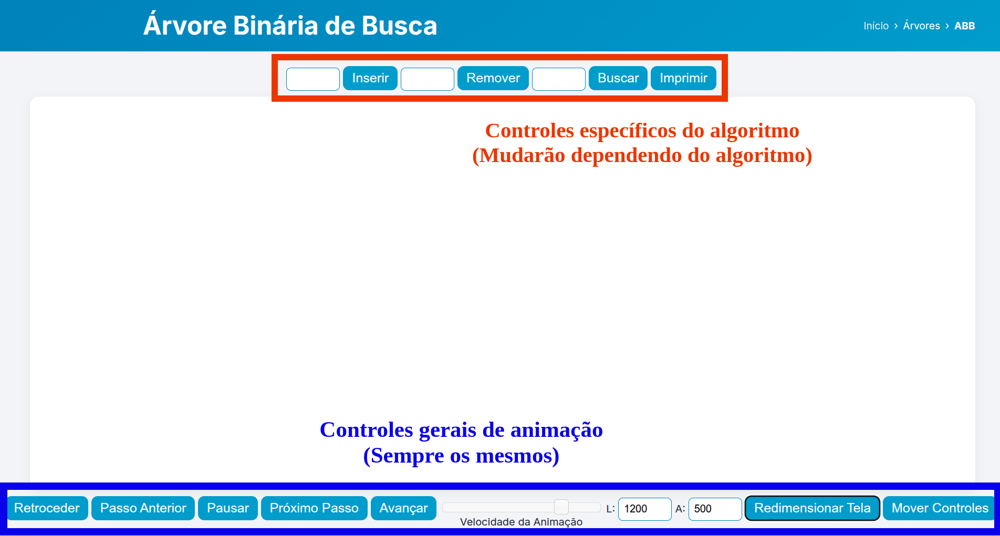

Visualizando algoritmos
A melhor maneira de entender estruturas de dados complexas é vê-las em ação. Desenvolvemos animações interativas para uma variedade de estruturas de dados e algoritmos. Nossa ferramenta de visualização foi escrita em JavaScript usando o elemento canvas do HTML5 e funciona em praticamente qualquer navegador moderno, incluindo dispositivos iOS como iPhone e iPad, e até mesmo o navegador do Kindle. (A taxa de quadros por segundo no Kindle é tão baixa que as visualizações não são muito úteis, mas as visualizações baseadas em árvores — ABB e árvores AVL — parecem funcionar bem).
Confira o menu Algoritmos para todas as implementações JavaScript mais recentes.
Como usar as visualizações
Essas visualizações são bastante autoexplicativas, embora existam algumas sutilezas para uso avançado. Veja um exemplo típico de visualização para Árvores de Busca Binária.
Controles específicos do algoritmo
Na parte superior da tela (destacada em vermelho na captura de tela acima) estão os controles específicos do algoritmo — estes variam dependendo do algoritmo que você está visualizando. Neste exemplo, você pode inserir, excluir ou encontrar um elemento na ABB digitando o valor no campo apropriado e pressionando Enter ou clicando no botão correspondente. A árvore pode ser impressa clicando no botão de impressão. Depois de dar um comando, a visualização será iniciada e poderá ser controlada pelos controles gerais de animação na parte inferior da tela.
Controles gerais de animação
- Retroceder: Se uma animação estiver em andamento, este botão desfaz completamente o comando atual. Se a animação não estiver em execução, ele desfaz o comando anterior.
- Passo Anterior: Este botão só fica ativo se a animação atual estiver pausada (usando o botão reproduzir/pausar). Ele volta um passo na animação atual. Caso não haja animação em execução, ele desfaz o comando anterior. Ao pressioná-lo repetidamente, você pode retroceder por todo o histórico de ações realizadas.
- Reproduzir/Pausar: Alterna entre o modo de reprodução (no qual o algoritmo é executado continuamente até a conclusão) e o modo pausado (onde é necessário pressionar o botão Próximo Passo ou Passo Anterior para avançar a animação).
- Próximo Passo: Este botão só fica ativo se a animação atual estiver pausada (usando o botão reproduzir/pausar) e ainda não tiver sido concluída. Ele avança um passo na animação atual.
- Avançar: Este botão só fica ativo se a animação atual ainda não tiver sido concluída. Ele pula diretamente para o final da animação atual.
- Velocidade da Animação (controle deslizante): Altera a velocidade da animação. O valor deste controle é salvo em um cookie, portanto, você só precisa defini-lo uma vez caso tenha uma preferência de velocidade.
- L, A, Redimensionar Tela: Altera a Largura e a Altura da área de exibição. Embora a mudança seja imediata, as animações não ficarão centralizadas nesta nova área até que você recarregue a página. Isso limpará a animação atual, mas os valores de largura e altura também são salvos em um cookie; portanto, você só precisará alterar essa configuração uma vez para que tudo funcione adequadamente, esteja você usando um smartphone ou um computador com bastante espaço de tela.
- Mover Controles: Alterna a posição dos controles gerais entre o topo e a parte inferior da área de exibição.
Observe que é fácil se confundir ao avançar e retroceder em uma animação — você pode confundir o próximo passo com o anterior e interpretar erroneamente o funcionamento do algoritmo. Recomenda-se avançar apenas utilizando o botão "Próximo Passo" ao estudar um algoritmo específico pela primeira vez.
Criando suas próprias visualizações
O tutorial para criar suas próprias visualizações já está online! Todo o código-fonte também está disponível lá. Se você deseja criar suas próprias visualizações, mas está com dificuldades para fazer tudo funcionar, por favor, me avise. Todo o material está sob a licença FreeBSD e você pode usá-lo para o que quiser. Por favor, informe-me se estiver usando o código — tenho curiosidade de ver como ele está sendo aplicado na prática.
Esta biblioteca tem como base a versão original desenvolvida por David Galles, posteriormente modificada por Yves Lucet. A presente versão constitui uma adaptação adicional realizada por Ronaldo Fiorilo, consistindo na tradução integral para o português, bem como na reformulação do estilo visual e do esquema de cores, resultante da integração e do aprimoramento das versões anteriormente mencionadas.